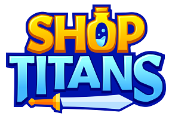

Shop Titans
Guilda: Brasil-PE
Heróis
Links úteis

Classes
Aqui você encontrará um estudo completo sobre cada classe de heróis
Saiba mais
Tl;dr
Um resumo sem enrolação mostrando as melhores skills e equipamentos
Saiba mais
Build para grupo
Seleção de skills e equipamentos custo-benefício para missões em grupo
Saiba mais
Build para solo
Seleção das melhores skills e equipamentos para missões solo
Saiba mais
Dicas
Estudar ou dar atenção aos heróis pode parecer chato, mas essencial para um bom desempenho no jogo, principalmente se o
foco for o end-game.
Aqui vão algumas dicas baseadas na minha experiência até o momento
Heróis e campeões
- Para a classe de ladinos, priorize skills com esquiva e dano
- Para classe de conjuradores, priorize skills com dano, dano + PV, ou dano + defesa
- Para classe de lutadores, priorize skills com defesa. Mas há exceções, por exemplo: Samurais mandam bem com dano e
crítico, e, Berserkers são pau para toda obra, você pode focar totalmente em dano, ou, mistão com dano e defesa
- Quando for formar times ou grupos, evite peso-morto. Exemplo: Times com um campeão lutador / tank (Argon, Rudo), não é
necessário que haja heróis da mesma classe, lutadores
- Times liderados por conjuradores ou ladinos, só precisam de um herói lutador / tank, o resto pode ser completado com
conjuradores e ladinos
- Use a Yami para auxiliar times de ladinos com pouca evasão
- Equipe decentemente os heróis. Use itens com afinidade e o elemento correto, de preferência elemento T9
- Familiar Golem é uma ótima opção para todos os campeões
- Na dúvida de qual espírito escolher, rune seus ladinos com leão, tigre, tubarão ou gato. Conjuradores com urso, morsa,
tubarão ou lobo. E, lutadores com urso, morsa, tubarão ou lobo - exceção para o samurai, caso esteja com as skills
corretas, dinossauro é a opção
Cidade Perdida de Ouro
- Sia é a campeã desse evento. Atenda todas as solicitações dela na loja para alcançar o rank 11 o mais breve possível.
Com ela, use um familiar Golem runado com elemento opulento e espírito de urso, leão ou tubarão, e, abastecê-la de
sementes. Envie-la sempre no time mais forte. Ela só deve enfrentar os portadores da chave quando a quantidade de ouro
estimada for maior do que ela traz das missões comuns da cidade. Priorize usar as cornetas no time dela, e as de ouro,
use sempre com ela quando enfrentar os portadores da chave
- Envie sempre times completos para as missões
- Aguarde os seus principais times concluírem as missões para economizar plumas de fênix, usando unicamente uma para
acordar todos os heróis e campeões
- Times incompletos demoram mais, usar a Yami neles é uma opção para diminuir a espera
Torre dos Titãs
- Equipe decentemente cada herói, não poupe ouro ou diamantes para conseguir isso
- Use o reforço com sabedoria, dexando o gigante para os últimos andares
- Forme times se baseando nas três descrições que a torre providencia para cada chefe. As informações ficam ao lado do
avatar do chefe
- Argon, 1 conjurador e 2 ladinos, ou, Donovan, 1 lutador, 1 conjurador e 1 ladino, são ótimas opções de times para
enfrentar os últimos chefões
@EleazarSF
© 2022 Brasil-PE